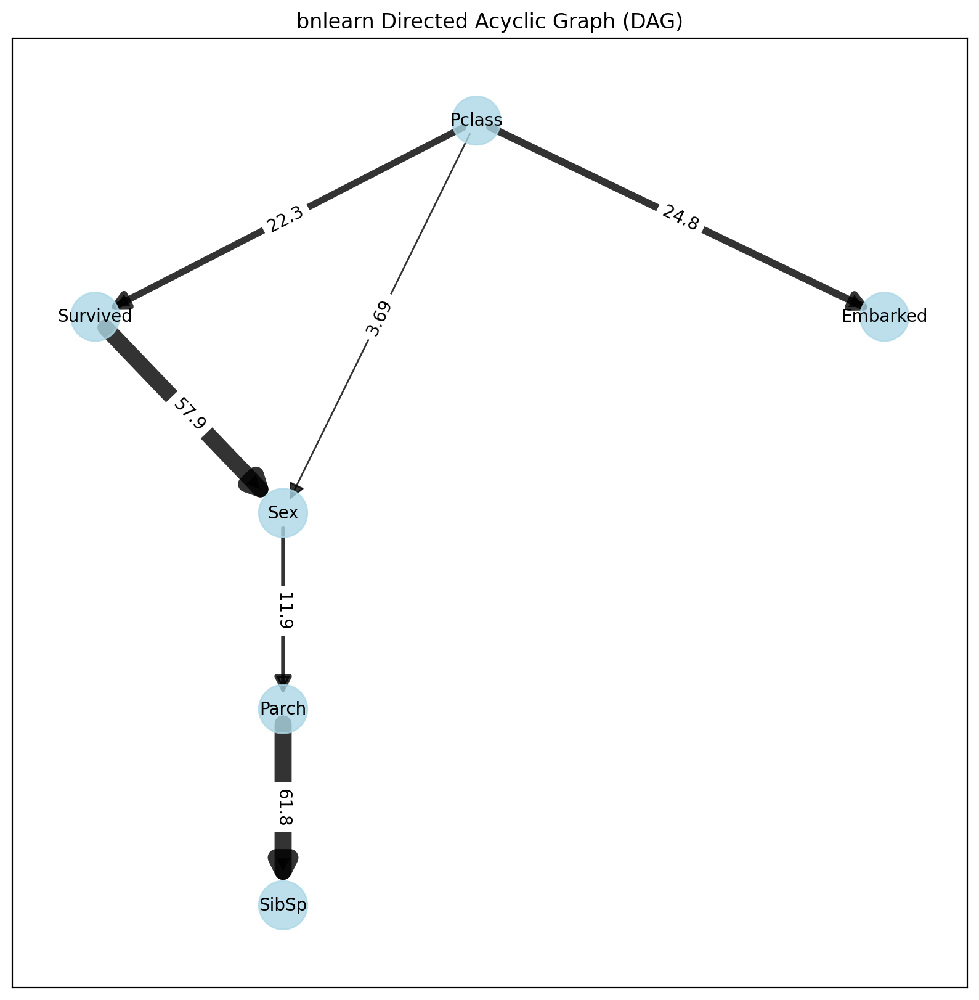
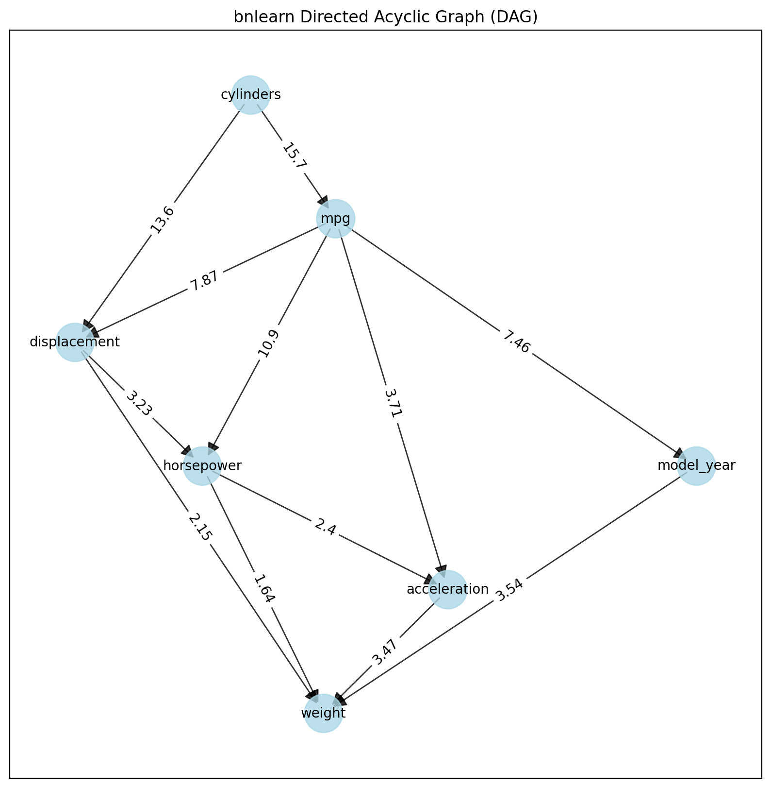

Titanic Dataset Analysis
In this example, we will learn the structure of the Titanic dataset.
import bnlearn as bn
# Load example mixed dataset
df = bn.import_example(data='titanic')
# Convert to one-hot encoding
dfhot, dfnum = bn.df2onehot(df)
# Structure learning
# model = bn.structure_learning.fit(dfnum, methodtype='cl', black_list=['Embarked','Parch','Name'], root_node='Survived', bw_list_method='nodes')
model = bn.structure_learning.fit(dfnum)
# Plot
G = bn.plot(model, interactive=False)
# Compute edge strength with chi-square test statistic
model = bn.independence_test(model, dfnum, test='chi_square', prune=True)
# Plot with edge labels
G = bn.plot(model, interactive=False, pos=G['pos'], edge_labels='pvalue')
# Parameter learning
model = bn.parameter_learning.fit(model, dfnum)
 |
Making Inferences:
# Make inference with evidence
query = bn.inference.fit(model, variables=['Survived'], evidence={'Sex':True, 'Pclass':True})
print(query)
# +----+------------+----------+
# | | Survived | p |
# +====+============+==========+
# | 0 | 0 | 0.555427 |
# +----+------------+----------+
# | 1 | 1 | 0.444573 |
# +----+------------+----------+
print(query.df)
# Survived p
# 0 0.555427
# 1 0.444573
# Another inference using only sex as evidence
query = bn.inference.fit(model, variables=['Survived'], evidence={'Sex':0})
print(query)
# +----+------------+----------+
# | | Survived | p |
# +====+============+==========+
# | 0 | 0 | 0.406634 |
# +----+------------+----------+
# | 1 | 1 | 0.593366 |
# +----+------------+----------+
print(query.df)
# Print model CPDs
CPDs = bn.print_CPD(model)
# All CPDs are stored in the dict CPD which contains the CPD for each node
print(CPDs.keys())
# dict_keys(['Pclass', 'Survived', 'Embarked', 'Sex', 'SibSp', 'Parch'])
CPDs['Survived']
# Survived Pclass Sex p
# 0 0 0 0 0.331202
# 1 0 0 1 0.555427
# 2 0 1 0 0.368132
# 3 0 1 1 0.634709
# 4 0 2 0 0.500000
# 5 0 2 1 0.746269
# 6 1 0 0 0.668798
# 7 1 0 1 0.444573
# 8 1 1 0 0.631868
# 9 1 1 1 0.365291
# 10 1 2 0 0.500000
# 11 1 2 1 0.253731
Medical Domain Analysis
This section describes a use case for analyzing patient treatment regarding shortness-of-breath (dyspnea). The example demonstrates how to incorporate expert knowledge into a Bayesian model. The dataset is synthetic and based on Lauritzen and Spiegelhalter (1988), focusing on lung diseases (tuberculosis, lung cancer, or bronchitis) and visits to Asia.
Description
- Motivation:
“Shortness-of-breath (dyspnea) may be due to tuberculosis, lung cancer or bronchitis, or none of them, or more than one of them. A recent visit to Asia increases the chances of tuberculosis, while smoking is known to be a risk factor for both lung cancer and bronchitis. The results of a single chest X-ray do not discriminate between lung cancer and tuberculosis, as neither does the presence or absence of dyspnea.”
- Source:
Lauritzen S, Spiegelhalter D (1988). Local Computation with Probabilities on Graphical Structures and their Application to Expert Systems (with discussion). Journal of the Royal Statistical Society
Importing Data
The first step is to import the dataset. For unstructured data, use the df2onehot functionality bnlearn.bnlearn.df2onehot(). The Examples section contains examples of importing raw data followed by basic structuring approaches (section: Working with Raw Data). In this case, we’ll load a structured dataset from bnlearn.
import bnlearn as bn
# Load dataset with 10,000 samples
df = bn.import_example('asia', n=10000)
# Print to screen
print(df)
smoke |
bronc |
lung |
asia |
tub |
either |
dysp |
xray |
|
|---|---|---|---|---|---|---|---|---|
0 |
0 |
1 |
1 |
1 |
1 |
1 |
0 |
1 |
1 |
1 |
1 |
1 |
1 |
1 |
1 |
1 |
0 |
2 |
1 |
0 |
1 |
0 |
1 |
0 |
1 |
1 |
… |
… |
… |
… |
… |
… |
… |
… |
… |
9999 |
0 |
1 |
1 |
1 |
1 |
1 |
0 |
1 |
This dataset contains 8 variables with discrete values (yes/no, true/false, or 1/0). bnlearn can handle multiple categories, including non-numerical values (see Working with Raw Data). In this example, we generate 10,000 samples representing patients. The number of required samples depends on the dataset’s complexity (number of variables and categories per variable). For example, 1,000 samples are sufficient for the sprinkler dataset (4 variables, binary states), while more complex datasets like alarm require more samples.
Making Inferences with Data and Expert Knowledge
Expert knowledge can be incorporated into Bayesian models using Directed Acyclic Graphs. The DAG describes relationships between variables. Let’s create a custom DAG and make inferences (Inference).
- Aim: Make inferences about shortness-of-breath (dyspnea) when:
You have measured data (imported as shown in Import DAG/BIF)
You have expert knowledge
Creating a Custom Directed Acyclic Graph
Based on limited knowledge about dyspnea: - Smoking is related to lung cancer - Smoking is related to bronchitis - Lung conditions or bronchitis may require an X-ray examination
This is a simple DAG for demonstration purposes. Note that the direction is crucial - the first column is the source (“from”) and the second column is the destination (“to”).
edges = [('smoke', 'lung'),
('smoke', 'bronc'),
('lung', 'xray'),
('bronc', 'xray')]
Plot the Bayesian DAG:
# Create the DAG from the edges
DAG = bn.make_DAG(edges)
# Plot and verify the arrows are correct
bn.plot(DAG)
Computing Conditional Probability Distributions (CPDs)
We now have: 1. The dataset in our dataframe (df) 2. The DAG based on expert knowledge
The next step is to connect the DAG to the dataset using bnlearn.bnlearn.parameter_learning.fit(), which computes the CPDs. See section Parameter learning for more details about CPDs and parameter learning.
# Check current CPDs in the DAG
CPDs = bn.print_CPD(DAG)
# [bnlearn] >No CPDs to print. Tip: use bn.plot(DAG) to make a plot.
# This is correct, as we haven't specified any CPDs yet
# Learn parameters from the dataset
DAG = bn.parameter_learning.fit(DAG, df, methodtype='bayes')
# Print the CPDs
CPDs = bn.print_CPD(DAG)
# Now we have a DAG with learned CPDs
The learned Conditional Probability Distributions are shown in the tables below. For example: - The probability that a patient does not smoke is P(smoke=0)=0.49 - The probability that a patient smokes is P(smoke=1)=0.50
CPD of smoke:
smoke(0) |
0.495273 |
smoke(1) |
0.504727 |
The CPD becomes more complex for patients who smoke and have lung cancer (intersection). More edges to a node increase complexity, but bnlearn handles the computations.
CPD of lung:
smoke |
smoke(0) |
smoke(1) |
lung(0) |
0.13913362701908957 |
0.05457492795389049 |
lung(1) |
0.8608663729809104 |
0.9454250720461095 |
CPD of bronc:
smoke |
smoke(0) |
smoke(1) |
bronc(0) |
0.5936123348017621 |
0.3114193083573487 |
bronc(1) |
0.4063876651982379 |
0.6885806916426513 |
CPD of xray:
bronc |
bronc(0) |
bronc(0) |
bronc(1) |
bronc(1) |
lung |
lung(0) |
lung(1) |
lung(0) |
lung(1) |
xray(0) |
0.7651245551601423 |
0.08089070665757782 |
0.7334669338677354 |
0.08396533044420368 |
xray(1) |
0.23487544483985764 |
0.9191092933424222 |
0.2665330661322645 |
0.9160346695557963 |
Make inferences
When you are at this part, you combined your expert knowledge with a data set! Now we can make inferences which allows to ask questions to the model. Let me demonstrate a few questions.
Question 1
What is the probability of lung-cancer, given that we know that patient does smoke? The model returns that the probability of lung-cancer or lung(1) is 0.94 when the patient does smoke; P(lung=1 | smoke=1)=0.94.
q1 = bn.inference.fit(DAG, variables=['lung'], evidence={'smoke':1})
print(q1.df)
# Finding Elimination Order: : 100% 2/2 [00:00<00:00, 401.14it/s]
# Eliminating: bronc: 100%| 2/2 [00:00<00:00, 200.50it/s]
# [bnlearn] >Variable Elimination..
lung |
phi(lung) |
|---|---|
lung(0) |
0.0546 |
lung(1) |
0.9454 |
Question 2
What is the probability of bronchitis, given that we know that patient does smoke? The model returns that the probability of bronchitis or bronc(1) is 0.68 when the patient does smoke; P(bronc=1 | smoke=1)=0.68.
q2 = bn.inference.fit(DAG, variables=['bronc'], evidence={'smoke':1})
# Finding Elimination Order: : 100% 2/2 [00:00<00:00, 286.31it/s]
# Eliminating: lung: 100% 2/2 [00:00<00:00, 143.26it/s]
# [bnlearn] >Variable Elimination..
bronc |
phi(bronc) |
|---|---|
bronc(0) |
0.3114 |
bronc(1) |
0.6886 |
Question 3
Lets add more information to our inference. What is the probability of lung-cancer, given that we know that patient does smoke and also has bronchitis?
q3 = bn.inference.fit(DAG, variables=['lung'], evidence={'smoke':1, 'bronc':1})
# Finding Elimination Order: : 100% 1/1 [00:00<00:00, 334.31it/s]
# Eliminating: xray: 100% 1/1 [00:00<00:00, 338.47it/s]
# [bnlearn] >Variable Elimination..
lung |
phi(lung) |
|---|---|
lung(0) |
0.0546 |
lung(1) |
0.9454 |
Question 4
Lets specify the question even more. What is the probability of lung-cancer or bronchitis, given that we know that patient does smoke but did not had xray?
q4 = bn.inference.fit(DAG, variables=['bronc','lung'], evidence={'smoke':1, 'xray':0})
lung |
bronc |
phi(lung,bronc) |
|---|---|---|
lung(0) |
bronc(0) |
0.1092 |
lung(0) |
bronc(1) |
0.2315 |
lung(1) |
bronc(0) |
0.2001 |
lung(1) |
bronc(1) |
0.4592 |
The highest probability for the patient under these condition is that lung-cancer is true and bronchitus is true too (P=0.45). Note that, if you put xray=1, then the probability becomes even higher (P=0.67).
Determine causalities when you have data
Suppose that we have the medical records of hundreds or even thousands patients treatment regarding shortness-of-breath (dyspnoea). Our goal is to determine the causality across variables given the data set.
- Steps to take
Import the data set.
Compute Directed Acyclic Graph by means of structure learning.
Compare to DAG to that of the expert-DAG.
Compute Directed Acyclic Graph from data
Import and process teh data set (Importing Data). For this use-case we will compute the best performing DAG given the data set. You only need to provide the data set into bnlearn bnlearn.bnlearn.structure_learning.fit(). More about Directed Acyclic Graphs can be found in the section Directed Acyclic Graphs.
# Structure learning on the data set
model = bn.structure_learning.fit(df)
# [bnlearn] >Computing best DAG using [hc]
# [bnlearn] >Set scoring type at [bic]
# Compute significance
model = bn.independence_test(model, df, prune=True)
# [bnlearn] >Edge [lung <-> tub] [P=0.540506] is excluded because it was not significant (P<0.05) with [chi_square]
The computations can take seconds to days or even never-ending, depending on the complexity of your data set and the method in bnlearn you choose. This use-case contains only 8 variables, each with two states and will be computed within seconds. If your data set is huge, and readily have suspicion you can use the black_list or white_list parameters (Black and white lists).
Lets plot the learned DAG and examine the structure!
# Plot the DAG
bn.plot(model, interactive=False)
bn.plot(model, interactive=True)
# Plot differences between expert-DAG and the computed-DAG
bn.compare_networks(model, DAG)

A comparison with our initial expert-DAG shows few differences in red. As an example, we did not include the either variable, which describes either being lung-cancer or bronchitus.

Make inference when you have data
In this scenario we the goal is to make inferences across variables given the data set.
- Steps to take
Import the data set
Compute Directed Acyclic Graph (DAG)
Compute Conditional Probability Distributions (CPDs)
The first step is to import and pre-process the data set as depicted in Importing Data. Then we compute the DAG by means of structure learning as depicted in Compute Directed Acyclic Graph from data. To make inferences, we first need to compute the CPDs which we can do with bnlearn.bnlearn.parameter_learning.fit().
# Learning the CPDs using parameter learning
model = bn.parameter_learning.fit(model, df, methodtype='bayes')
# Print the CPDs
CPDs = bn.print_CPD(model)
CPD of smoke:
smoke(0) |
0.495455 |
smoke(1) |
0.504545 |
CPD of bronc:
smoke |
smoke(0) |
smoke(1) |
bronc(0) |
0.6009174311926605 |
0.31675675675675674 |
bronc(1) |
0.39908256880733944 |
0.6832432432432433 |
CPD of lung:
smoke |
smoke(0) |
smoke(1) |
lung(0) |
0.138348623853211 |
0.05333333333333334 |
lung(1) |
0.861651376146789 |
0.9466666666666667 |
CPD of dysp:
bronc |
bronc(0) |
bronc(0) |
bronc(1) |
bronc(1) |
either |
either(0) |
either(1) |
either(0) |
either(1) |
dysp(0) |
0.7508090614886731 |
0.7821064552661382 |
0.6189591078066915 |
0.12156934978817462 |
dysp(1) |
0.24919093851132687 |
0.21789354473386183 |
0.38104089219330856 |
0.8784306502118254 |
CPD of either:
lung |
lung(0) |
lung(0) |
lung(1) |
lung(1) |
tub |
tub(0) |
tub(1) |
tub(0) |
tub(1) |
either(0) |
0.5098039215686274 |
0.8427672955974843 |
0.648876404494382 |
0.01302897644361059 |
either(1) |
0.49019607843137253 |
0.15723270440251572 |
0.351123595505618 |
0.9869710235563894 |
CPD of tub:
tub(0) |
0.0555455 |
tub(1) |
0.944455 |
CPD of xray:
either |
either(0) |
either(1) |
xray(0) |
0.7716262975778547 |
0.0750711093051605 |
xray(1) |
0.22837370242214533 |
0.9249288906948395 |
From this point on we can start making inferences given the DAG and the CPDs. For demonstration purposes I will repeat question 4.
Question
What is the probability of lung-cancer or bronchitis, given that we know that patient does smoke but did not had xray?
q = bn.inference.fit(DAG, variables=['bronc','lung'], evidence={'smoke':1, 'xray':0})
lung |
bronc |
phi(lung,bronc) |
|---|---|---|
lung(0) |
bronc(0) |
0.0797 |
lung(0) |
bronc(1) |
0.1720 |
lung(1) |
bronc(0) |
0.2370 |
lung(1) |
bronc(1) |
0.5113 |
The highest probability for the patient under these condition is that lung-cancer is true and bronchitus is true too (P=0.51).
Use Case Continuous Datasets
Bnlearn includes the LiNGAM-based methods which can model datasets with continuous variables but also hybrid datasets. A disadvantage is that causal discovery of structure learning is the end-point when uing this method. It is not possible to perform parameter learning and inferences. In the following example we will load the auto mpg dataset and learn the structure:
# Import
import bnlearn as bn
# Load data set
df = bn.import_example(data='auto_mpg')
del df['origin']
# Structure learning
model = bn.structure_learning.fit(df, methodtype='direct-lingam')
# Compute edge strength
model = bn.independence_test(model, df, prune=True)
# Plot
bn.plot(model)
# Plot with graphviz
dotgraph = bn.plot_graphviz(model)
dotgraph
dotgraph.view(filename=r'dotgraph_auto_mpg_lingam_direct')
 |
|